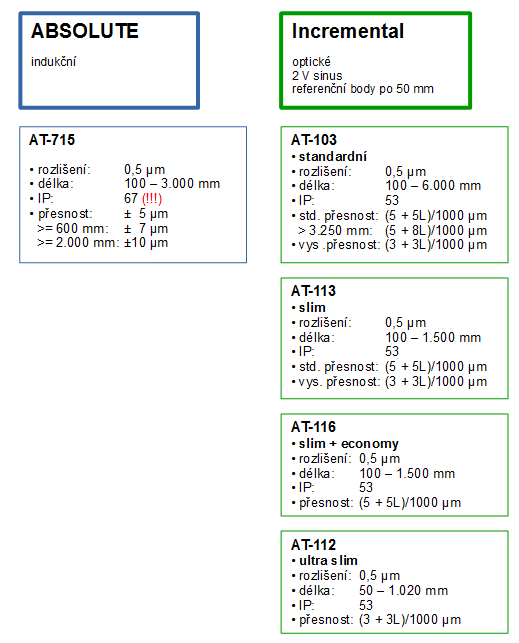

Lineární DRO systémy – systémy digitálního odměřování
DRO systémy (od slov digital readout = číslicový zobrazovač) představují ve své podstatě komplet tvořený alespoň jedním lineárním pravítkem (=snímač polohy) a ovládací jednotkou s displejem pro zobrazení snímané polohy.
Typickým místem použití jsou obráběcí, příp., obecněji řečeno, výrobní stroje. Zde se setkáváme s 2D a 3D systémy digitálního odměřování celkem běžně. Je třeba zdůraznit, že úloha DRO systémů v těchto strojích je ryze pasivní (zobrazování polohy) a že tyto systémy nejsou nijak propojeny s pohony stroje. Nejedná se o NC řízení.
Pomocí ovládací a zobrazovací jednotky se provádí: nastavení systému (typy pravítek, kompenzace, definice směrů, citlivost, …) práce se zobrazovanými údaji (nulování, režim ABS/INC , přepínání souřadných systémů, …) realizace pokročilých funkcí (opakované polohování na roztečné kružnici, v lineárním poli, nastavení měřítka zobrazení, rozteče, výpočty …)
Lineární pravítka pro DRO
Pravítka pro DRO jsou uzavřená pravítka založená na indukčním nebo optickém principu. Jejich elektrické rozhraní, kabeláž a připojovací konektory jsou přizpůsobeny DRO jednotce. Tím pádem je velmi snadné nakonfigurovat a fyzicky sestavit kompletní sestavu celého DRO systému.
Nedoporučuje se v rámci jednoho DRO systému používat mix pravítek indukční / optické (tj. Absolute / Incremental).
Technicky je sice možné to realizovat, pro tuto kombinaci by však mělo být jasné odůvodnění.
Přehled pravítek pro DRO systémy:

Porovnání profilu standardního pravítka AT-715 a pravítka s nejmenším profilem AT-112.
Nejpoužívanějším typem pravítka pro DRO aplikace je typ AT-715 díky ABSOLUTE systému odměřování, odolnosti proti vlivům prostředí, příznivé ceně a velmi dobré přesnosti.
Všechna Mitutoyo pravítka prochází na konci výrobního procesu procesem ověření přesnosti s vystavením odpovídajícího certifikátu přiloženému k pravítku.

Reálný certifikát pro AT-715 s délkou 350 mm. Maximální odchylka na celém rozsahu je pouze 1,2 µm, tj. hluboko pod typovou hodnotou maximální nepřesnosti 5 µm.
DRO čítač KA-200
Vyobrazení čítače je nahoře v hlavičce stránky.
Ovládací a zobrazovací jednotka DRO systémů je obvykle nazývána jako „čítač“ (display counter). Toto pojmenování vychází z technického a historického principu jednotky, jejíž zásadní úlohou bylo čítat impulzy z inkrementálních pravítek. S příchodem Absolute pravítek a se zvýšením funkcionality a inteligence jednotky již není název čítač zcela výstižný, nicméně v běhu doby se stal vžitým pojmem.
Čítač existuje v provedené pro 2D a 3D odměřování (zde na obrázcích pro 2D, souřadnice X a Y). Může pracovat ve dvou základních režimech:
- standardní - zobazované údaje opovídají poloze (posuvu) jednotlivých os.
- pro soustruh - zobrazovaný údaj pro osu X zde odpovídá průměru opracovávaného dílu. Skutečný posuv v ose X je násoben dvěma, což odpovídá změně průměru dílu. Používá se na všech strojích pracujících s rotačními díly (brusky na kulato, navařování aj.).
Kromě standardních funkcí jako nulování nebo přednastavení souřadnic, ABS/INC aj. čítač umožňuje:
- Práci s až 9 souřadnými systémy (standardní režim) – umožňuje přepínat mezi souřadným systémem stroje, dílu, jednotlivých dílů při vícenásobném upnutí a podobně.
- V režimu soustruh umožňuje nastavení a zapamatování délek jednotlivých nástrojů (až 9), tj. při výměně nástroje, resp. výběru jiného nástroje otočením držáku nožů zobrazované hodnoty budou odpovídat skutečnému průměru, který bude tímto nástrojem zhotoven.
- Zhotovovat sady děr na roztečné kružnici nebo vytvářet lineární pole děr.
- Pracovat s roztečemi.
- Provádět teplotní kompenzaci i kalibraci pravítka (toto jen pro inkrementální pravítka).
- Provádět sčítání údajů ze dvou pravítek odměřujících ve směru stejné osy (např. u soustruhu podélný posuv Z1 + posuv držáku nástrojů Z2).
Funkční schema čítače včetně modulu pro výstup dat
V základním provedení jdou k čítači připojit až dvě (2-osá varianta) nebo 3 (3-osá varianta) inkrementální nebo ABSOLUTE pravítka. Dále má čítač vstup pro dotykovou sondu, která se obvykle používá při použití inkrementálních pravítek. Sonda je připojena pomocí kruhového DIN konektoru se 4 piny tak, že při kontaktu s obrobkem se uzavře obvod mezi kostrou a povrchem sondy. Zapojení odpovídá spínacímu kontaktu mezi dvěma vývody sondy. Při každém kontaktu sondy dojde též k zaznění zvukového signálu.
Čítač je možno doplnit modulem výstupů. Ten dle způsobu montáže poskytuje USB výstup s HID funkcionalitou (klávesnicový výstup) a konektor jack 3,5 mm pro připojení ručního spínače (foot switch) pro spuštění výdeje dat. Alternativně lze výstupní modul namontovat jako obousměrný port RS232 s konektorem D-sub 25. Některé piny nevyužité pro RS232 jsou využity pro externí spouštění výstupu či nulování údajů jednotlivých os. V obou případech je výdej dat spouštěn také pomocí dotykové sondy.
Aplikace s výstupem dat přes RS232 a spouštěním výdeje pomocí vstupů dotykové sondy byla použita např. v jednoúčelovém přípravku firmy Olympus.

Základní nastavení
Čítač je dodávám se základním přednastavením s režimem „standardní čítač“, takže pro uvedení do provozu není třeba dělat žádné nastavení. Stačí připojit alespoň jedno pravítko a zapnout.
Po montáži do zařízení však zpravidla bývá potřebné provést změnu některých základních parametrů. Změna parametrů se provádí v režimu nastavení parametrů, do kterého se čítač dostane po zapnutí (na zadním panelu) při současném držení tlačítka MODE. Uvedený mód se ohlásí výpisem textu PARA na displeji.
Na jednotlivé parametry je možné se přepínat (listovat) tlačítky + či -, vstup do režimu změny parametru se provádí stisknutím ENT. Řada parametrů má nastavení samostatné pro jednotlivé osy, v takovém případě je třeba nejprve tlačítky X, Y, Z vybrat příslušnou osu. Listování dostupnými parametry je možné provádět opět tlačítky + a -, potvrzení výběru je tlačítkem ENT.
Režim nastavení parametrů se ukončuje tlačítkem C, čítač následně přejde z režimu nastavení parametrů do normálního režimu. Doporučuje se provést následný reset čítače jeho vypnutím a zapnutím.
Některé ze základních parametrů:
- tyPE - typ čítače: standard (MILL) / soustruh (LATHE).
- DIR. - směr čítání jednotlivých pravítek: normální (-I) nebo opačný (I-). V souvislosti se způsobem montáže mohou některá pravítka vykazovat opačný směr nárůstu hodnoty, než je požadováno. V takovém případě je třeba pro dané pravítko (X, Y, Z) změnit směr čítání na opačný.
- DSP.MODE – umožňuje nastavit pro konkrétní osu (X, Y, Z) zobrazení typu průměr (dIA). Da displeji příslušné osy se pak zobrazuje dvojnásobná změna hodnoty než je změna hodnoty odměřená pravítkem. Odpovídá tedy změně průměru v závislosti na změně poloměru. Při nastavení DSP.MODE = dIA svítí u displeje příslušné osy symbol „dia.“. Standardní nastavení tohoto parametru je „rAd“.
Pokud se tedy čítač bude používat jako čítač soustruhu (tyPE = LATHE), měl by být DSP.MODE pro osu X vždy nastaven na dIA (zobrazování průměru). - OFFSET – konstanty nastavení nulového bodu stroje (pro pravítka AT-715). Jde o hodnoty, které se připočítávají k hodnotě z pravítek (X, Y, Z) pro souřadnici 0 v okamžiku zapnutí přístroje. Použití je následující: po montáži celého mechanického a odměřovacího systému se nastaví jeho poloha do nulové souřadnice stroje. Poté se zapne čítač a zaznamenají se hodnoty zobrazené pro jednotlivé osy. Uvedené hodnoty s opačným znaménkem se potom zadají jako OFFSET konstanty. Po uložení a po příštím zapnutí čítače se zobrazí již korigované hodnoty a na dané pozici stroje tím pádem souřadnice 0.
Celkově je možné na čítači (s modulem pro výstup dat) nastavit 36 různých parametrů. Více viz návod k čítači.